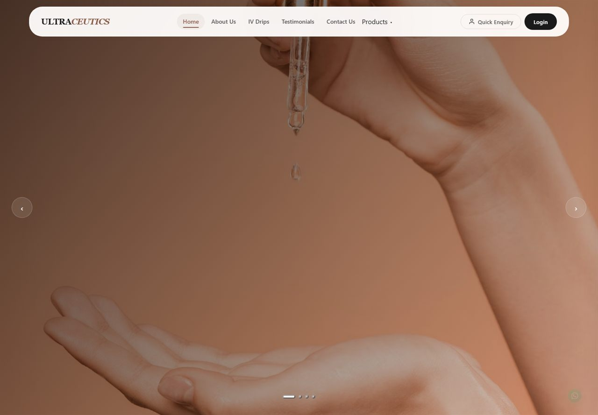
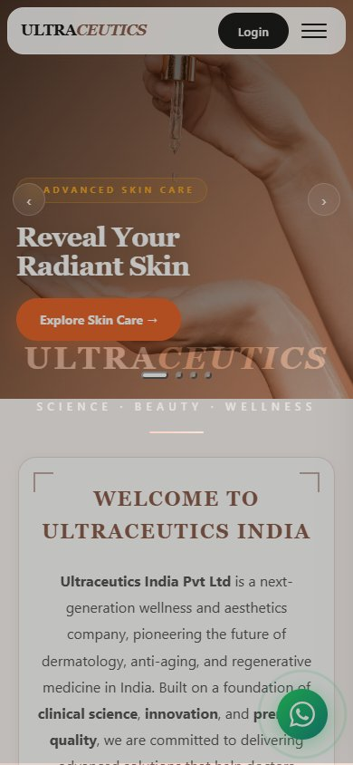

Case study
Ultraceutics India.
A responsive, editorial website for a wellness and aesthetics brand — designed to make services easy to explore and the experience feel calm, premium, and human.

A clearer front door for the brand.
A considered digital home for a wellness and aesthetics company — structured around services, credibility, and a calm first impression.
Project type
Website
Stack
React + Vite
Status
Live
Focus
Responsive design
The brief
Ultraceutics needed a digital home that felt as considered as the treatments themselves. The site had to introduce a wellness and aesthetics brand, make its services easy to find, and hold up across screen sizes — without slipping into a clinical or overly corporate tone.
The direction was deliberately editorial: warm neutrals, generous type, full-width imagery, and a structure that lets the brand breathe. The result is a site that feels closer to a considered print spread than a template.
What I focused on
- A calm, editorial visual hierarchy with a clear reading order.
- Service and treatment navigation that does not overwhelm the first visit.
- Responsive layouts that keep the same tone on mobile and desktop.
- Reusable React sections built with Vite, so the page structure stays manageable.

Build notes
The project is a React application built with Vite. The page is composed from reusable sections, with responsive CSS handling the shift from a wide, image-led layout to a compact single-column view on mobile. Large imagery and a restrained palette do most of the visual work, so the interface can stay quiet.
The live site is intentionally lightweight for a media-rich experience: a small set of routes, a focused set of components, and no unnecessary interactive layers competing with the content.
Outcome
The result is a site that feels considered at first glance and stays readable on a phone. The structure is simple enough to explain, which matters more to me than adding another interactive layer.
Reflection
Editorial layouts are easy to make beautiful and harder to make resilient. The useful lesson here was to design the mobile reading order first, then let the wide layout breathe around it. That order is what keeps the calm tone intact when the screen gets smaller.
What I’d take further
The next iteration would add a content layer so the team can update services without touching the code, a booking or enquiry flow with proper form handling, and a formal accessibility and performance audit once the final content set is in place.
Have a similar project?
Let’s make it clear.
Tell me what you’re building and where the current experience feels stuck.